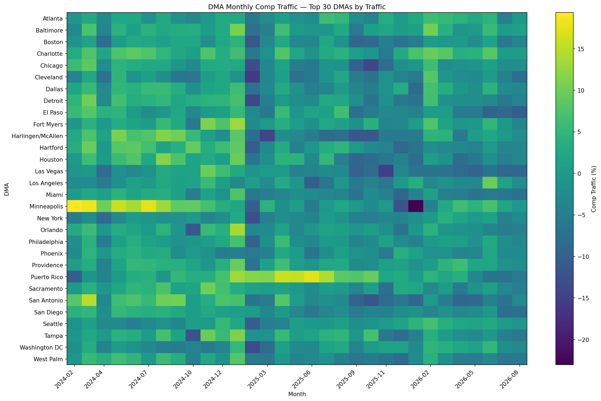
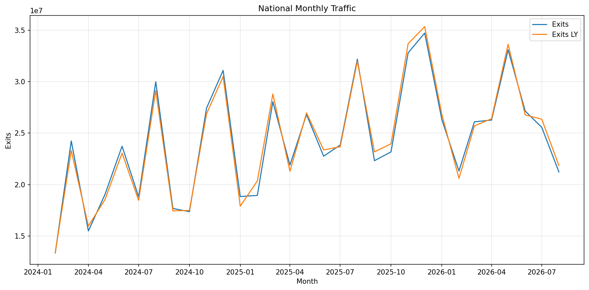
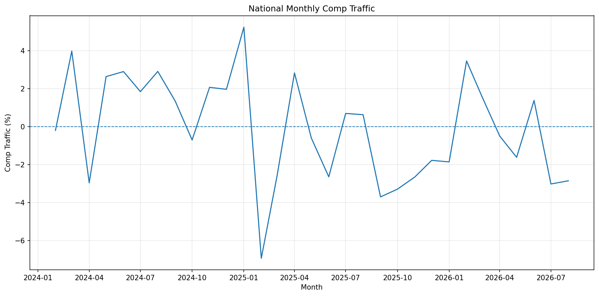
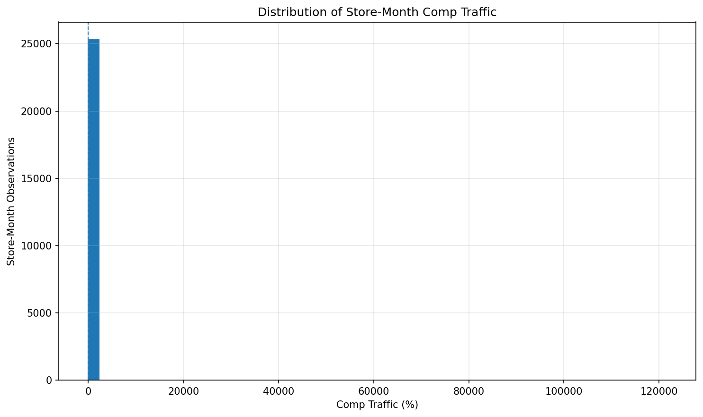

Internal analytical report focused on the DMA population selected for treatment analysis.
Across the treated DMA population, aggregate traffic was -0.58% versus the corresponding last-year traffic baseline.
The treated-DMA result is -0.51% relative to the national mean comp-traffic result of -0.07%.
The aggregate treated-DMA metric is calculated from total Exits and total Exits LY across the treated population. It is therefore not an unweighted average of DMA-level percentage changes.
The primary analytical population for this report consists of 34 treated DMAs. All subsequent treatment-focused results are calculated from this population.
The treated-DMA panel contains 1,054 DMA-month observations covering 31 months.
The heatmap below provides the primary visual diagnostic of comp-traffic performance across the treated DMA population over time.

DMA-level monthly comp traffic across the treated population.
The table below ranks the treated DMAs by aggregate comp traffic. Aggregate comp traffic is calculated using summed Exits and Exits LY for each DMA.
| Treated DMA | Months | Mean Comp Traffic | Median Comp Traffic | Total Exits | Total Exits LY | Mean Stores | Aggregate Comp Traffic |
|---|---|---|---|---|---|---|---|
| Puerto Rico | 31 | 4.135419 | 3.462597 | 34597820 | 33281773 | 16.193548 | 3.954257 |
| Charlotte | 31 | 3.507849 | 3.226997 | 7684896 | 7438970 | 9.419355 | 3.305915 |
| Cincinnati | 31 | 2.703192 | 2.566015 | 4673419 | 4540012 | 7.290323 | 2.938472 |
| Minneapolis | 31 | 3.402381 | 2.478222 | 7808879 | 7612553 | 9.322581 | 2.578977 |
| Providence | 31 | 1.485588 | 1.464382 | 6804590 | 6704305 | 7.774194 | 1.495830 |
| Baltimore | 31 | 1.553425 | 1.230005 | 9207189 | 9073945 | 7.516129 | 1.468424 |
| Fort Myers | 31 | 1.610414 | 0.616313 | 5838117 | 5760474 | 7.290323 | 1.347858 |
| Atlanta | 31 | 0.779064 | 1.048574 | 18297956 | 18133667 | 24.064516 | 0.905989 |
| Sacramento | 31 | 0.721450 | 0.773400 | 10846226 | 10780655 | 12.516129 | 0.608228 |
| Tampa | 31 | 0.706885 | 0.445305 | 14935975 | 14884729 | 17.290323 | 0.344286 |
| Dallas | 31 | 0.344001 | 0.343790 | 25855738 | 25782753 | 25.322581 | 0.283077 |
| Hartford | 31 | 0.583288 | -0.297814 | 7996082 | 7980048 | 9.580645 | 0.200926 |
| Columbus | 31 | -0.088406 | 0.068561 | 3434406 | 3429574 | 4.580645 | 0.140892 |
| Orlando | 31 | -0.023684 | -0.531286 | 19013265 | 19049849 | 19.709677 | -0.192044 |
| Detroit | 31 | -0.043624 | -1.779308 | 10177791 | 10198192 | 13.483871 | -0.200045 |
| Seattle | 31 | -0.360133 | -0.250471 | 9113122 | 9139208 | 9.451613 | -0.285430 |
| Philadelphia | 31 | -0.492617 | -0.267600 | 20978539 | 21077517 | 30.000000 | -0.469590 |
| Houston | 31 | -0.206619 | -0.263345 | 29938620 | 30088771 | 26.870968 | -0.499027 |
| San Diego | 31 | -1.000155 | -1.596035 | 8116480 | 8182005 | 9.032258 | -0.800843 |
| Washington DC | 31 | -1.234137 | -1.735346 | 15936897 | 16091966 | 16.161290 | -0.963642 |
| Los Angeles | 31 | -1.050316 | -1.292508 | 41957327 | 42367502 | 43.129032 | -0.968136 |
| Phoenix | 31 | -1.024617 | -1.488021 | 11578555 | 11703228 | 13.709677 | -1.065287 |
| San Antonio | 31 | -0.454552 | -2.638684 | 12082791 | 12223655 | 10.580645 | -1.152389 |
| Chicago | 31 | -1.116613 | -1.069084 | 30523301 | 30905285 | 32.967742 | -1.235983 |
| Harlingen/McAllen | 31 | -0.381929 | -0.347788 | 11600320 | 11768614 | 7.129032 | -1.430024 |
| Oklahoma City | 31 | -1.460041 | -1.431969 | 4355826 | 4420467 | 7.483871 | -1.462312 |
| El Paso | 31 | -1.029371 | -0.738468 | 8376815 | 8523375 | 6.645161 | -1.719507 |
| Boston | 31 | -1.713359 | -1.296800 | 15215890 | 15507775 | 15.290323 | -1.882185 |
| West Palm | 31 | -1.401905 | -2.531567 | 7637003 | 7792763 | 8.548387 | -1.998778 |
| New York | 31 | -2.339886 | -2.318415 | 85224937 | 87228392 | 70.258065 | -2.296792 |
| Cleveland | 31 | -2.604046 | -2.192332 | 4990927 | 5122470 | 8.645161 | -2.567960 |
| Miami | 31 | -2.174042 | -3.449680 | 33556646 | 34443091 | 28.322581 | -2.573651 |
| Buffalo | 31 | -2.544901 | -1.181787 | 2013741 | 2072498 | 3.677419 | -2.835081 |
| Las Vegas | 31 | -3.394977 | -3.021090 | 8093327 | 8373730 | 9.096774 | -3.348603 |
The following treated DMAs have the strongest aggregate comp-traffic performance.
| Treated DMA | Aggregate Comp Traffic | Mean Comp Traffic | Months | Mean Stores |
|---|---|---|---|---|
| Puerto Rico | 3.954257 | 4.135419 | 31 | 16.193548 |
| Charlotte | 3.305915 | 3.507849 | 31 | 9.419355 |
| Cincinnati | 2.938472 | 2.703192 | 31 | 7.290323 |
| Minneapolis | 2.578977 | 3.402381 | 31 | 9.322581 |
| Providence | 1.495830 | 1.485588 | 31 | 7.774194 |
| Baltimore | 1.468424 | 1.553425 | 31 | 7.516129 |
| Fort Myers | 1.347858 | 1.610414 | 31 | 7.290323 |
| Atlanta | 0.905989 | 0.779064 | 31 | 24.064516 |
| Sacramento | 0.608228 | 0.721450 | 31 | 12.516129 |
| Tampa | 0.344286 | 0.706885 | 31 | 17.290323 |
The following treated DMAs have the weakest aggregate comp-traffic performance.
| Treated DMA | Aggregate Comp Traffic | Mean Comp Traffic | Months | Mean Stores |
|---|---|---|---|---|
| Las Vegas | -3.348603 | -3.394977 | 31 | 9.096774 |
| Buffalo | -2.835081 | -2.544901 | 31 | 3.677419 |
| Miami | -2.573651 | -2.174042 | 31 | 28.322581 |
| Cleveland | -2.567960 | -2.604046 | 31 | 8.645161 |
| New York | -2.296792 | -2.339886 | 31 | 70.258065 |
| West Palm | -1.998778 | -1.401905 | 31 | 8.548387 |
| Boston | -1.882185 | -1.713359 | 31 | 15.290323 |
| El Paso | -1.719507 | -1.029371 | 31 | 6.645161 |
| Oklahoma City | -1.462312 | -1.460041 | 31 | 7.483871 |
| Harlingen/McAllen | -1.430024 | -0.381929 | 31 | 7.129032 |
The table below shows the evolution of aggregate traffic across the treated DMA population by month.
| Month | Treated DMAs | Exits | Exits LY | Mean DMA Comp Traffic | Aggregate Treated-DMA Comp Traffic |
|---|---|---|---|---|---|
| 2024-02-01 | 34 | 9,821,757 | 9902703 | 0.633299 | -0.817413 |
| 2024-03-01 | 34 | 17,968,370 | 17438188 | 5.170624 | 3.040350 |
| 2024-04-01 | 34 | 11,460,961 | 11866041 | -2.344472 | -3.413775 |
| 2024-05-01 | 34 | 14,005,234 | 13721406 | 3.484129 | 2.068505 |
| 2024-06-01 | 34 | 17,539,125 | 17084496 | 2.938876 | 2.661062 |
| 2024-07-01 | 34 | 13,793,222 | 13552830 | 2.324318 | 1.773740 |
| 2024-08-01 | 34 | 21,907,214 | 21323479 | 3.235808 | 2.737522 |
| 2024-09-01 | 34 | 13,102,089 | 12941820 | 1.429404 | 1.238381 |
| 2024-10-01 | 34 | 12,751,084 | 12856064 | -0.815625 | -0.816580 |
| 2024-11-01 | 34 | 20,181,853 | 19857426 | 2.683942 | 1.633782 |
| 2024-12-01 | 34 | 22,774,490 | 22396548 | 2.659356 | 1.687501 |
| 2025-01-01 | 34 | 14,248,905 | 13516982 | 5.641950 | 5.414840 |
| 2025-02-01 | 34 | 14,033,153 | 15007815 | -7.001959 | -6.494363 |
| 2025-03-01 | 34 | 20,486,179 | 21064626 | -2.824394 | -2.746059 |
| 2025-04-01 | 34 | 16,067,517 | 15746663 | 2.141950 | 2.037600 |
| 2025-05-01 | 34 | 19,830,164 | 19959924 | -1.282380 | -0.650103 |
| 2025-06-01 | 34 | 16,769,711 | 17230388 | -2.804041 | -2.673631 |
| 2025-07-01 | 34 | 17,482,904 | 17405249 | 0.098030 | 0.446159 |
| 2025-08-01 | 34 | 23,166,072 | 23140424 | 0.539029 | 0.110836 |
| 2025-09-01 | 34 | 16,225,483 | 16949057 | -4.185647 | -4.269111 |
| 2025-10-01 | 34 | 16,697,162 | 17314251 | -3.548324 | -3.564053 |
| 2025-11-01 | 34 | 23,581,653 | 24384763 | -2.935245 | -3.293491 |
| 2025-12-01 | 34 | 24,595,379 | 25273497 | -3.010081 | -2.683119 |
| 2026-01-01 | 34 | 19,409,166 | 19903388 | -2.995789 | -2.483105 |
| 2026-02-01 | 34 | 15,204,005 | 14881665 | 3.164775 | 2.166021 |
| 2026-03-01 | 34 | 18,601,159 | 18452989 | 1.135675 | 0.802959 |
| 2026-04-01 | 34 | 18,994,512 | 19177339 | -0.895853 | -0.953349 |
| 2026-05-01 | 34 | 24,213,396 | 24708103 | -1.530946 | -2.002206 |
| 2026-06-01 | 34 | 19,865,374 | 19697305 | 1.256582 | 0.853259 |
| 2026-07-01 | 34 | 18,544,986 | 19238217 | -3.074377 | -3.603406 |
| 2026-08-01 | 34 | 15,141,134 | 15690165 | -3.489091 | -3.499205 |
National traffic is shown below as context. It is not the primary treatment result.


This distribution provides context for the underlying store-level variation from which the DMA-level results are constructed.

The following table is provided as a secondary diagnostic only. The treatment analysis is based on the treated-DMA population above.
| DMA | Aggregate Comp Traffic |
|---|---|
| Utica, NY | 22.295160 |
| Elmira (Corning), NY | 15.640714 |
| Portland-Auburn, ME | 12.853266 |
| Charlottesville, VA | 10.877524 |
| Abilene-Sweetwater, TX | 6.775868 |
| Albany, GA | 6.760038 |
| Greensboro-High Point-Winston Salem, NC | 5.910298 |
| Charleston, SC | 5.796107 |
| Portland, OR | 5.642079 |
| Beaumont-Port Arthur, TX | 5.365027 |
| Jackson, TN | 5.253446 |
| Columbus, GA (Opelika, AL) | 5.110901 |
| Memphis, TN | 4.967680 |
| Sioux Falls(Mitchell), SD | 4.906581 |
| Augusta, GA-Aiken, SC | 4.725626 |
| Syracuse, NY | 4.473084 |
| Alexandria, LA | 4.380690 |
| Corpus Christi, TX | 4.359758 |
| Jonesboro, AR | 4.158301 |
| Puerto Rico | 3.954257 |
Weekly store-level comp traffic is calculated as:
((Exits − Exits LY) / Exits LY) × 100
Weekly observations are aggregated to the store-month level. Monthly store comp traffic is calculated from summed Exits and summed Exits LY rather than averaging weekly percentage changes.
Store-month observations are mapped to DMA using the store master. DMA-month comp traffic is then calculated from aggregate DMA Exits and Exits LY.
For the treatment analysis, only the DMAs identified as treated are included in the primary treated-DMA panel and aggregate calculations.
The aggregate treated-DMA result is calculated as:
((Total Treated-DMA Exits − Total Treated-DMA Exits LY) / Total Treated-DMA Exits LY) × 100
Weekly traffic coverage: 2024-02-10 through 2026-08-15 .
National monthly traffic coverage: 2024-02-01 through 2026-08-01 .
Treated-DMA monthly coverage: 2024-02-01 through 2026-08-01 .
| Dataset | Rows | DMAs / Stores |
|---|---|---|
| Weekly Traffic | 104,421 | 1,091 stores |
| Store-Month | 25,730 | 1,091 stores |
| DMA-Month | 4,659 | 164 DMAs |
| Treated DMA-Month | 1,054 | 34 treated DMAs |